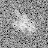
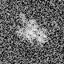

最小
最大
平均値
標準偏差
標準誤差
-65.0178
94.4699
4.85274
20.4635
0.255794
| オプション | 必須項目/選択項目 | NULL | デフォルト |
|---|---|---|---|
| -i | 必須 | 入力ファイル設定 | NULL |
| -o | 必須 | 出力ファイル設定 | NULL |
| -T | 選択 | 閾値設定（モード１，３のときに活用） | 1e-16 |
| -m | 選択 | モード | 0 |
| -h | 選択 | ヘルプを表示 |
| モード | 説明 |
|---|---|
| 0 | 絶対値 |
| 1 | logの絶対値 |
| 2 | 平方根の絶対値 |
| 3 | 二乗の絶対値 |
|
最小 |
-65.0178 |
最小 |
0.00273783 |
最小 |
-2.56259 |
|  | 最小 |
-0.30103 |
|  | 最小 |
0.477121 |
最小 |
0.0523243 |
最小 |
7.49574e-06 |